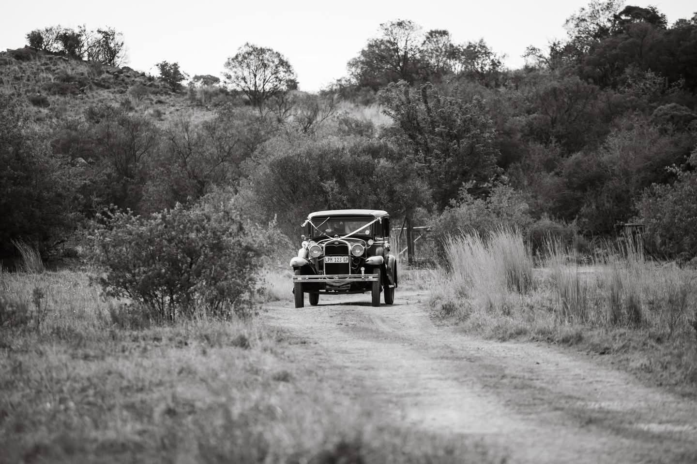
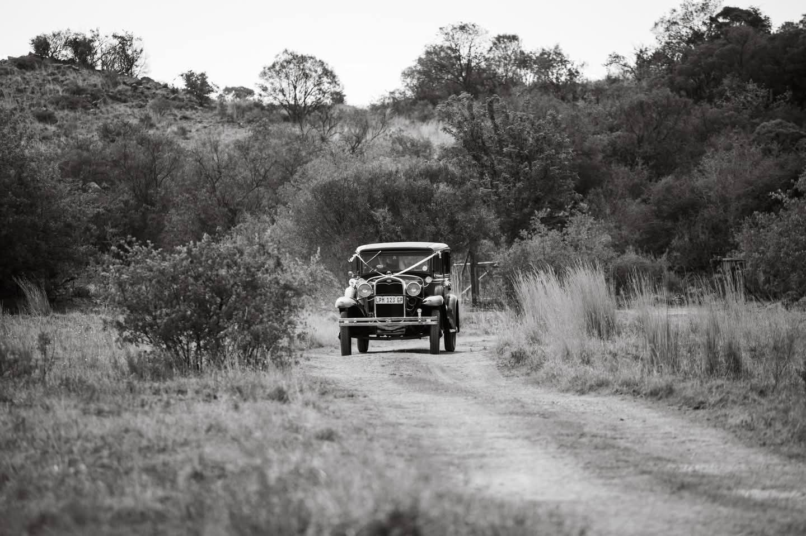
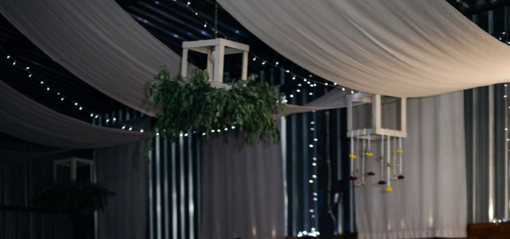
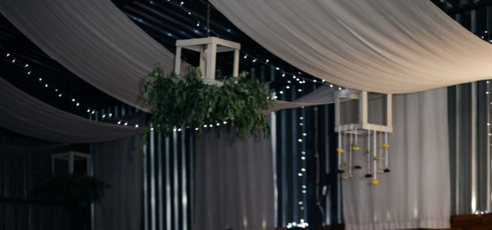
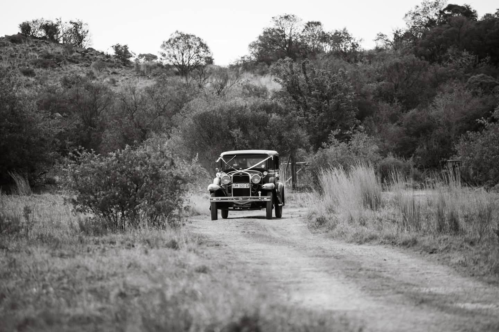
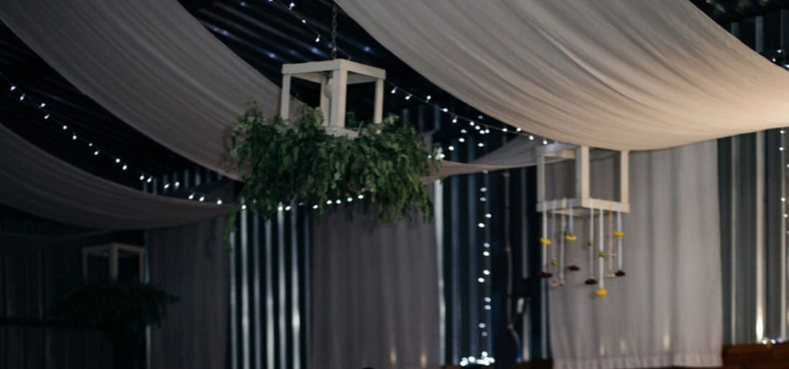

Gallery Preview


 


 

Waar drome 'n bekostigbare werklikheid word
Where dreams become an affordable reality
Goedheid inni Skuur is a warm, rustic, family-run venue nestled on the border of the Free State, Gauteng, and Mid Vaal.
Surrounded by the beauty of nature, you and your guests can exhale stress and inhale the sky above, the earth below, and peace within.
"If you truly love nature, you will find beauty everywhere." – Vincent van Gogh
We host all types of special functions, including:
We comfortably accommodate up to 100 guests.
Our in-house team are experts in their field — and to top it off, they're budget-friendly!


üìç 53 Veekraal, Deneysville, South Africa
üìû +27 83 262 6147
üìß effortless.memorableevents@gmail.com
üí¨ WhatsApp Us